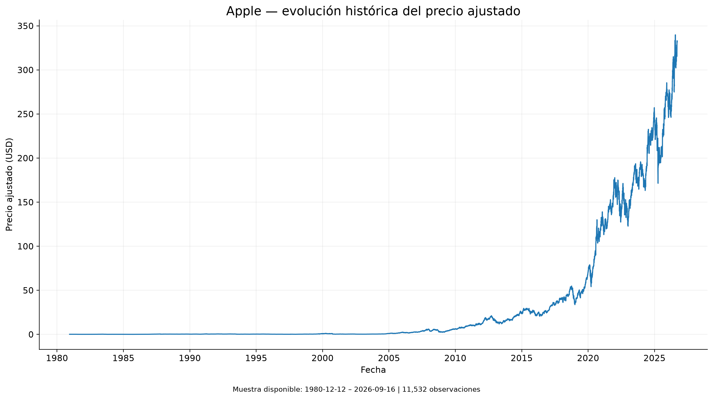
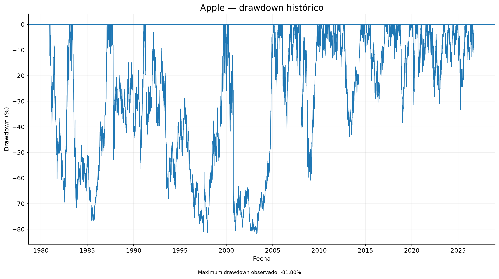
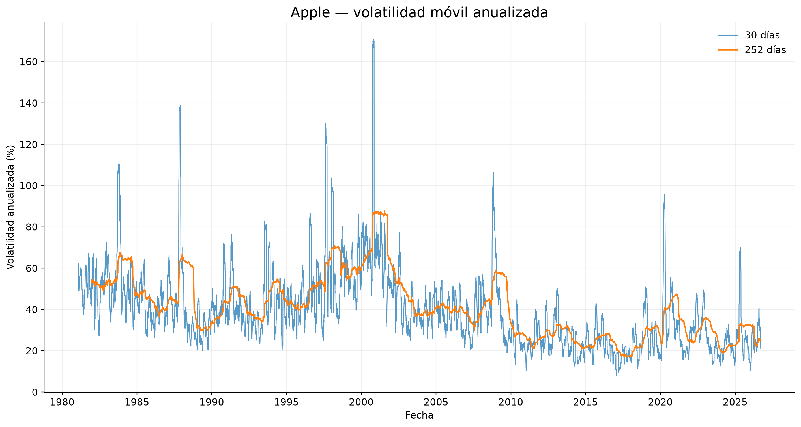
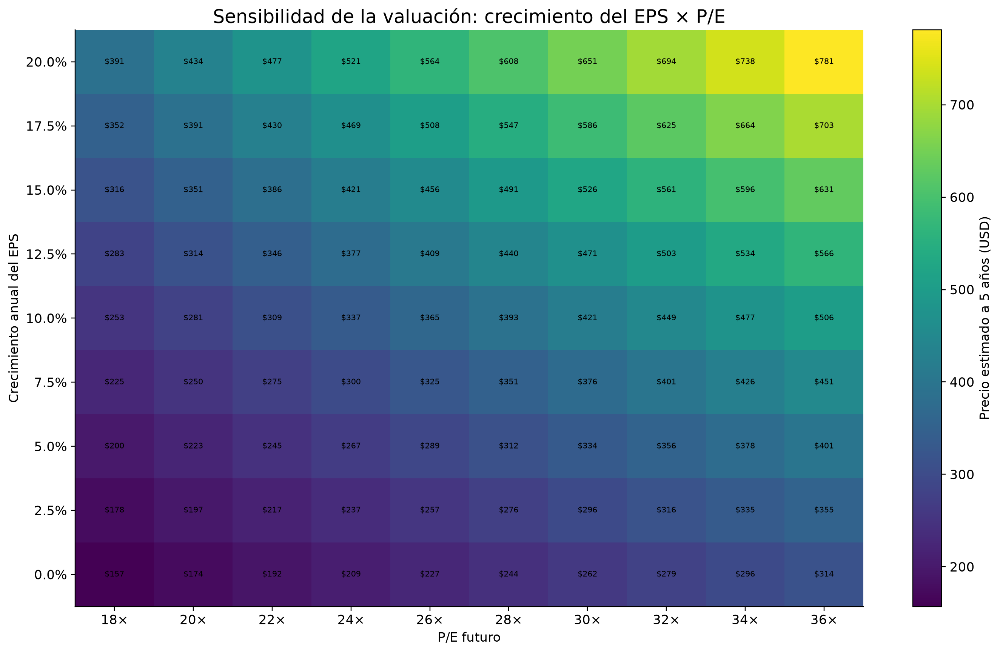
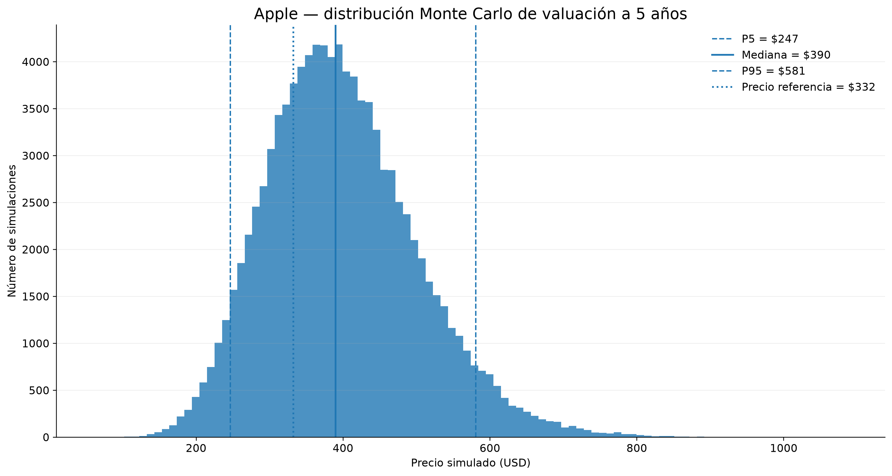
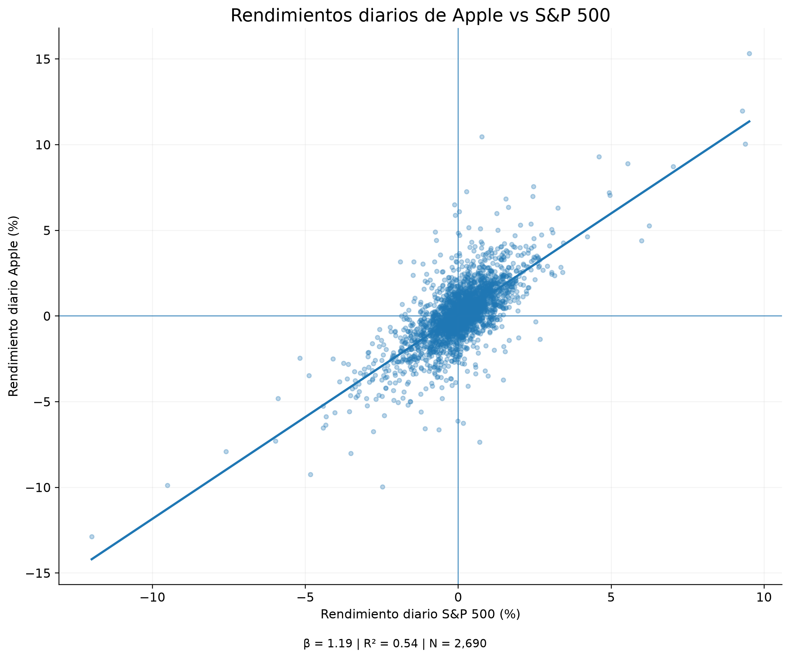
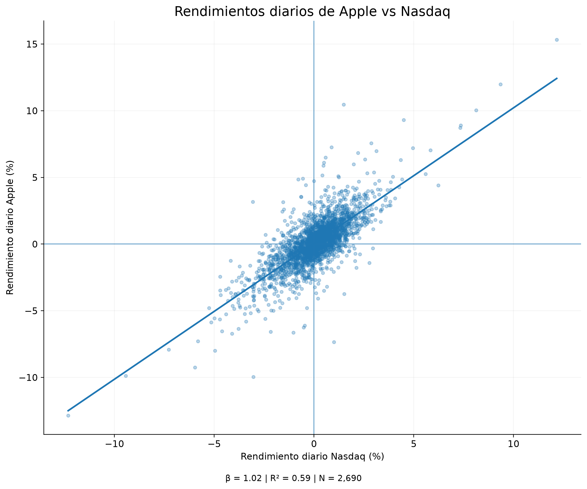
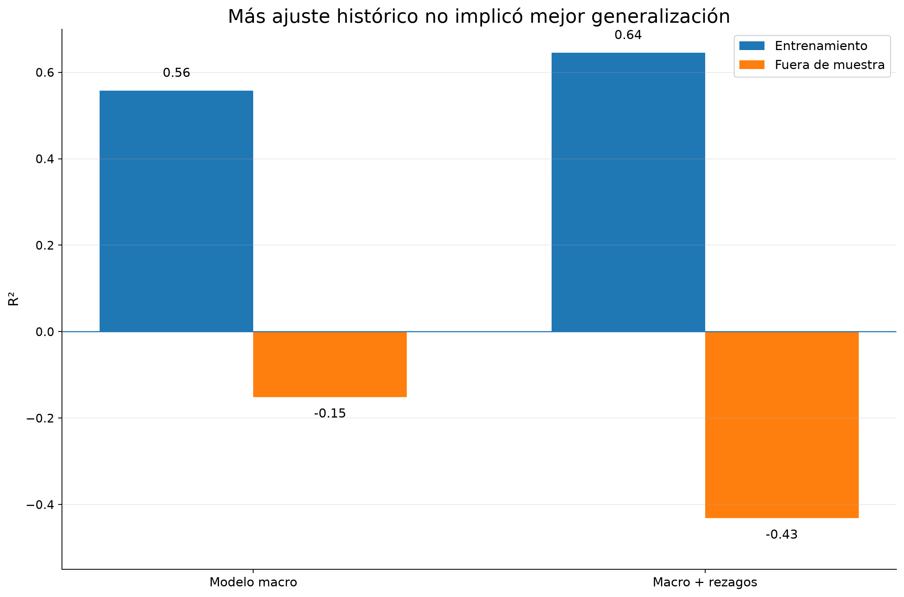

Kairos Lab · Investigación aplicada · Nota técnica · 2026
Medir la incertidumbre de una inversión: un experimento cuantitativo con Apple
Riesgo, valuación, simulación Monte Carlo, factores de mercado, macroeconomía y validación fuera de muestra
Las decisiones de inversión se realizan bajo incertidumbre. Aunque actualmente existe una enorme cantidad de información histórica, financiera y macroeconómica disponible, disponer de más datos no implica necesariamente poder anticipar con precisión el comportamiento futuro de un activo. Esta investigación utiliza Apple Inc. (AAPL) como laboratorio para estudiar hasta qué punto distintas herramientas cuantitativas pueden contribuir a estructurar esa incertidumbre.
El experimento combina información histórica de mercado, métricas de riesgo, valuación fundamental, simulaciones Monte Carlo, factores de mercado, variables macroeconómicas y pruebas fuera de muestra. Los resultados revelan una distinción fundamental: un modelo puede explicar una proporción considerable del comportamiento histórico de una acción y, aun así, presentar una capacidad limitada para anticipar la magnitud de sus movimientos futuros.
En nuestro ejercicio fuera de muestra, distintos modelos identificaron correctamente la dirección mensual de los rendimientos aproximadamente 62.1% y 65.5% de las veces. Sin embargo, sus fuera de muestra fueron negativos.
Estos resultados no significan que Apple Lab pueda predecir el precio de Apple con una precisión de 62–66%. Por el contrario, muestran que anticipar ocasionalmente la dirección y estimar correctamente la magnitud de un movimiento son problemas distintos.
Contenido de esta nota
- Pregunta de investigación
- Diseño experimental
- Datos
- Primer experimento: medir el riesgo
- El riesgo depende del pasado observado
- Valuación: empresa y precio
- De tres escenarios a miles
- Apple y el mercado
- Modelo multifactor
- Incorporando la macroeconomía
- La prueba más importante
- Cuando un modelo mejor resulta peor
- ¿Predijimos 62–66%?
- El objetivo del laboratorio cambió
- Una predicción que aún no conocemos
- Reproducibilidad computacional
- Limitaciones
- ¿Qué aprendimos?
- Conclusión
- Fuentes y referencias
1. Pregunta de investigación
Apple Lab comenzó con una pregunta aparentemente sencilla:
De ella surgieron varias preguntas secundarias:
- ¿Podemos cuantificar el riesgo de una inversión?
- ¿Podemos construir diferentes escenarios de valuación en lugar de depender de un único precio esperado?
- ¿Cuánto de los movimientos de Apple está relacionado con el mercado?
- ¿Las variables macroeconómicas proporcionan información adicional?
- ¿Un modelo que explica correctamente el pasado puede anticipar información futura?
- ¿Y qué ocurre cuando añadimos más datos, variables y complejidad?
Estas preguntas terminaron transformando Apple Lab de un experimento sobre precios en un experimento sobre decisiones bajo incertidumbre.
2. Diseño experimental
Apple Lab no comenzó con un algoritmo final. El modelo fue construido progresivamente mediante una secuencia de experimentos:
Cada etapa buscó responder una pregunta distinta y, en algunos casos, los resultados obligaron a modificar la interpretación de etapas anteriores.
El objetivo no fue construir progresivamente un modelo hasta conseguir resultados favorables, sino utilizar cada experimento para identificar qué información era útil, qué supuestos eran demasiado fuertes y dónde comenzaban a aparecer limitaciones.
3. Datos
Los experimentos utilizan diferentes ventanas temporales dependiendo de la pregunta analizada.
Para los ejercicios de sensibilidad histórica se recuperaron precios ajustados de Apple desde diciembre de 1980, alcanzando más de 11,500 observaciones diarias. Para determinados análisis contemporáneos se utilizaron ventanas más recientes, especialmente desde 2016, con el objetivo de reducir la influencia de cambios estructurales extremadamente antiguos.
También se incorporaron series correspondientes a:
- S&P 500;
- Nasdaq;
- Microsoft;
- Nvidia;
- inflación;
- desempleo;
- Treasury estadounidense a 10 años;
- Federal Funds Rate;
- dólar estadounidense.
Las series de mercado fueron analizadas principalmente a frecuencia diaria, mientras que los experimentos macroeconómicos utilizaron información mensual.
4. Primer experimento: medir el riesgo
Antes de intentar estimar un precio futuro, necesitamos definir qué significa que una inversión sea riesgosa.
Calculamos los rendimientos diarios mediante:
y posteriormente incorporamos volatilidad anualizada, Value at Risk y maximum drawdown.
En una ventana aproximada de diez años, Apple presentó una volatilidad anualizada cercana al 29% y un maximum drawdown aproximado de −38.5%.
El resultado introduce una primera distinción importante. Una inversión puede generar retornos elevados a largo plazo y simultáneamente experimentar pérdidas considerables durante el recorrido.



5. El riesgo depende de cuánto pasado observemos
Una pregunta posterior fue cuánto dependían estas métricas de la ventana histórica seleccionada. Repetimos el análisis utilizando 10, 15 y 20 años de información, además del historial completo disponible.
| Ventana | Observaciones | Volatilidad anual | Maximum drawdown |
|---|---|---|---|
| 10 años | 2,514 | 29.14% | −38.52% |
| 15 años | 3,772 | 28.35% | −43.80% |
| 20 años | 5,032 | 31.22% | −60.87% |
| Historia completa | 11,515 | 43.70% | −81.80% |
La diferencia es considerable. Utilizando diez años, la volatilidad anualizada ronda el 29%. Utilizando prácticamente toda la historia bursátil de Apple, supera el 43%. El maximum drawdown también pasa de aproximadamente −39% a casi −82%.
Pero esto no significa automáticamente que utilizar toda la historia proporcione una mejor estimación del riesgo actual. Apple, su modelo de negocio, los mercados financieros, la regulación y el entorno macroeconómico han cambiado considerablemente desde 1980.
Existe entonces un trade-off. Una ventana reciente puede ignorar eventos extremos. Una ventana demasiado extensa puede incorporar regímenes que representan pobremente el activo contemporáneo.
Una precisión metodológica importante
En esta etapa también comparamos resultados de simulaciones utilizando distintas ventanas históricas. Sin embargo, los principales supuestos fundamentales de crecimiento de beneficios y múltiplos permanecieron constantes.
Por ello, que determinadas distribuciones de valuación hayan cambiado poco no demuestra que el modelo completo sea robusto al tamaño de muestra.
Las métricas históricas de riesgo son sensibles a la ventana temporal seleccionada. La selección de esa ventana constituye otra hipótesis del investigador.
6. Valuación: empresa y precio no son lo mismo
Posteriormente incorporamos información fundamental. Utilizamos como representación simplificada:
Esta relación permite separar dos fuentes diferentes de incertidumbre. Por un lado está el desempeño económico de la empresa, aproximado mediante sus beneficios por acción. Por otro está cuánto está dispuesto a pagar el mercado por esos beneficios.
Construimos escenarios pesimista, base y optimista modificando crecimiento esperado del EPS y múltiplos futuros. Esto produjo una conclusión sencilla pero relevante:
Por tanto, analizar una compañía y analizar una inversión no son exactamente el mismo problema.

7. De tres escenarios a miles: Monte Carlo
Los escenarios pesimista, base y optimista siguen representando solamente tres futuros posibles. El siguiente paso consistió en transformar determinados supuestos en distribuciones y generar miles de combinaciones mediante simulación Monte Carlo.
En versiones posteriores del experimento realizamos hasta 100,000 simulaciones. En uno de los experimentos de valuación a cinco años obtuvimos aproximadamente:
| Métrica | Resultado |
|---|---|
| Mediana | ~$390 |
| Percentil 5 | ~$248 |
| Percentil 95 | ~$582 |
| Probabilidad simulada de pérdida | ~18–19% |
Un 18% de pérdidas simuladas no significa que exista objetivamente una probabilidad del 18% de perder dinero en Apple.
Significa que, dadas las distribuciones y supuestos utilizados por ese experimento, aproximadamente 18% de las simulaciones terminaron por debajo del precio de referencia.

8. Apple no existe aislada del mercado
La siguiente etapa dejó de estudiar AAPL como un sistema independiente. Comparamos sus rendimientos con Microsoft, Nvidia, S&P 500 y Nasdaq durante aproximadamente 2016–2026.
Encontramos correlaciones relevantes. Aproximadamente:
y:
Posteriormente estimamos modelos lineales simples. Para el S&P 500 obtuvimos aproximadamente:
Mientras que utilizando Nasdaq:
Estos resultados indican que una proporción considerable de la variación diaria observada en los rendimientos de Apple está estadísticamente asociada con movimientos generales del mercado. Pero queda otra parte sin explicar.
Asociación estadística no equivale a causalidad.


9. Modelo multifactor
Posteriormente incorporamos simultáneamente S&P 500, Nasdaq, Microsoft y Nvidia. El modelo obtuvo aproximadamente:
Sin embargo, apareció otro problema econométrico: varias de estas variables están fuertemente relacionadas entre sí. Esto genera multicolinealidad.
Por ello, los coeficientes individuales de este modelo deben interpretarse como asociaciones condicionales y no como efectos causales independientes. Un coeficiente negativo para otra empresa tecnológica, por ejemplo, no significa que esa empresa provoque una caída de Apple.
Un coeficiente estadístico necesita interpretación económica antes de convertirse en una conclusión.
10. Incorporando la macroeconomía
Después preguntamos si determinadas variables económicas podían aportar información adicional. Construimos una base mensual combinando rendimientos de Apple con:
- rendimiento del S&P 500;
- desempleo;
- cambios en desempleo;
- Treasury a 10 años;
- cambios en tasas;
- Federal Funds Rate;
- inflación;
- dólar.
El modelo macroeconómico obtuvo aproximadamente:
dentro de la muestra utilizada.
La variable con la asociación estadística más consistente continuó siendo el mercado. Algunas variables presentaron relaciones más débiles o estadísticamente inciertas.
Para responder la segunda pregunta necesitamos datos que el modelo no haya utilizado para construirse.
11. La prueba más importante: fuera de muestra
Dividimos temporalmente la información.
No utilizamos una división aleatoria porque hacerlo permitiría mezclar observaciones futuras y pasadas de una serie temporal.
Para el modelo macroeconómico base obtuvimos aproximadamente:
pero:
El resultado cambia radicalmente la interpretación. Un fuera de muestra negativo indica que, bajo la definición utilizada en esta evaluación, las predicciones del modelo presentaron peor desempeño cuadrático que el benchmark implícito de la métrica en la muestra de prueba.
12. Cuando un modelo aparentemente mejor resulta peor
Intentamos posteriormente incorporar variables rezagadas. Dentro de muestra, el resultado parecía prometedor. El aumentó aproximadamente desde:
Pero fuera de muestra:
El modelo más complejo explicaba mejor los datos utilizados durante su construcción y, simultáneamente, generalizaba peor. También observamos deterioro en MAE y RMSE.
Este experimento proporciona una demostración aplicada del problema de overfitting.

13. ¿Entonces predijimos correctamente 62–66%?
Existe otro resultado que necesita especial cuidado. Durante ese ejercicio fuera de muestra, los modelos identificaron correctamente el signo del rendimiento mensual aproximadamente:
de las observaciones de prueba. Esto significa que el modelo acertó si el rendimiento mensual terminaría siendo positivo o negativo en aproximadamente esa proporción de meses.
No significa que Apple Lab predijera el precio de Apple con 65.52% de precisión. Se trata exclusivamente de precisión direccional mensual observada en esa muestra fuera de muestra, no de precisión del modelo ni de capacidad predictiva sobre el precio. De hecho, los fuera de muestra fueron negativos, lo que muestra que la estimación de la magnitud de los movimientos seguía siendo deficiente bajo la definición utilizada en esa evaluación.
Ambos resultados pueden coexistir:
Además, la muestra de prueba contenía solamente alrededor de 29 observaciones mensuales. Por ello, el resultado debe considerarse evidencia experimental, no demostración de una ventaja predictiva persistente.
14. El objetivo del laboratorio cambió
Después de estos experimentos, la pregunta original comenzó a parecer menos útil. Preguntar ¿cuál será el precio de Apple? implica buscar una respuesta puntual para un sistema inherentemente incierto.
Una pregunta más útil resultó ser:
De esta transición surge el concepto de Economic Stress Test. El sistema comenzó a integrar distintas dimensiones:
La investigación pública termina deliberadamente en este nivel. Las reglas utilizadas posteriormente para integrar estas dimensiones en un motor automatizado de decisión, sus ponderaciones, calibraciones, thresholds y arquitectura no forman parte de esta publicación.
15. Una predicción que todavía no conocemos
Existe una limitación adicional en todos los experimentos retrospectivos: hoy conocemos lo que ocurrió después.
Incluso tomando precauciones contra look-ahead bias, sigue siendo posible que decisiones metodológicas hayan sido influenciadas indirectamente por nuestro conocimiento del período histórico. Por eso diseñamos una última prueba.
Experimento prospectivo
En una fecha inicial :
- recopilamos exclusivamente información disponible hasta ese momento;
- ejecutamos el modelo;
- generamos una distribución para un horizonte de cinco meses;
- registramos los resultados;
- congelamos el baseline;
- esperamos.
Formalmente:
y posteriormente:
Una vez congelado, el modelo no puede modificarse utilizando información posterior para mejorar retrospectivamente su predicción.
Control de calidad
Durante una primera implementación detectamos una inconsistencia computacional en el componente de riesgo de mercado. Los controles produjeron métricas económicamente implausibles.
Por ello, esa ejecución fue descartada y no constituye un resultado del experimento prospectivo. El baseline definitivo solamente será registrado después de superar los controles correspondientes.
Una salida computacional no debe aceptarse simplemente porque el programa terminó de ejecutarse.
Estado del experimento
V21.1 · EN DESARROLLO — BASELINE VALIDADO PENDIENTE
Cuando finalice el horizonte, evaluaremos la posición del precio observado dentro de la distribución prevista y las diferentes métricas establecidas antes de conocer el resultado. La publicación podrá actualizarse entonces sin modificar retrospectivamente la predicción original.
16. Reproducibilidad computacional
Los experimentos fueron desarrollados en Python utilizando rutinas reproducibles para adquisición y transformación de datos, análisis estadístico, econometría y simulación. Dependiendo de la pregunta se utilizaron series diarias o mensuales.
El historial bursátil máximo utilizado superó las 11,500 observaciones diarias, mientras que determinados modelos contemporáneos emplearon ventanas más recientes.
Las simulaciones Monte Carlo utilizaron hasta:
iteraciones, utilizando semillas pseudoaleatorias controladas cuando correspondía.
Para las pruebas predictivas, las observaciones fueron separadas temporalmente, manteniendo información posterior fuera del conjunto utilizado para estimar los modelos.
Se evaluaron, dependiendo del experimento:
- ;
- ajustado;
- MAE;
- RMSE;
- precisión direccional;
- volatilidad;
- VaR;
- drawdown;
- distribuciones y percentiles simulados.
Los resultados dentro y fuera de muestra se presentan conjuntamente para evitar confundir capacidad explicativa con capacidad predictiva.
La investigación documenta los principales métodos necesarios para interpretar y evaluar los resultados. Determinados componentes posteriores de integración y decisión desarrollados por Kairos no forman parte de la implementación pública.
17. Limitaciones
Apple Lab presenta varias limitaciones que deben considerarse al interpretar sus resultados.
- Primera — dependencia de supuestos: las distribuciones obtenidas mediante Monte Carlo dependen de las distribuciones y parámetros especificados.
- Segunda — cambios estructurales: Apple y los mercados financieros han cambiado significativamente durante el período analizado.
- Tercera — endogeneidad y causalidad: las relaciones observadas mediante regresión representan asociaciones estadísticas y no necesariamente mecanismos causales.
- Cuarta — incertidumbre macroeconómica: las variables económicas pueden publicarse con rezagos, revisarse posteriormente y reaccionar simultáneamente con los mercados ante información no observada.
- Quinta — tamaño de la prueba: la evaluación direccional fuera de muestra utiliza un número relativamente reducido de observaciones mensuales.
- Sexta — generalización: los resultados obtenidos con Apple no pueden extrapolarse automáticamente a otras empresas, sectores o clases de activos.
- Séptima — riesgo de modelo: elegir variables, ventanas temporales, transformaciones y especificaciones constituye en sí mismo una fuente adicional de incertidumbre.
Por tanto, Apple Lab debe interpretarse como un experimento de análisis cuantitativo bajo incertidumbre, no como un sistema que elimina esa incertidumbre.
18. ¿Qué aprendimos?
El laboratorio produjo varias conclusiones.
El riesgo es medible, pero condicional
Podemos medir dimensiones importantes del riesgo, pero esas métricas dependen del período que observamos.
Las probabilidades heredan los supuestos
Podemos generar miles de escenarios, pero sus probabilidades continúan condicionadas a nuestros supuestos.
Asociación no implica causalidad
Podemos explicar una parte considerable de los movimientos históricos mediante factores de mercado, pero asociación no implica causalidad.
Más ajuste puede significar peor generalización
Podemos aumentar el ajuste histórico incorporando variables y rezagos y simultáneamente empeorar el desempeño fuera de muestra.
Dirección y magnitud son problemas distintos
En una muestra concreta, los modelos identificaron correctamente la dirección de una proporción mayoritaria de los rendimientos mensuales, aunque el reducido tamaño de la prueba impide interpretar este resultado como evidencia de una ventaja predictiva persistente. Acertar el signo de un rendimiento y estimar correctamente su magnitud siguen siendo problemas diferentes.
En conjunto, estos resultados cambian lo que entendemos por utilidad de un modelo financiero.
19. Conclusión
Apple Lab comenzó intentando responder cuánto podría valer una acción y terminó planteando una pregunta más interesante: ¿cuánto podemos saber realmente sobre su futuro?
Los datos permitieron medir riesgo, construir escenarios, analizar relaciones con el mercado, incorporar variables macroeconómicas y simular miles de resultados posibles. Pero las pruebas fuera de muestra introdujeron una limitación fundamental.
Un modelo que describe bien el pasado puede fracasar cuando enfrenta información nueva. Esto no vuelve inútil al análisis cuantitativo. Cambia su propósito.
En lugar de tratar un modelo como una máquina destinada a producir un precio futuro correcto, podemos utilizarlo para identificar riesgos, explicitar supuestos, comparar escenarios y estudiar qué tendría que ocurrir para que nuestra interpretación sea incorrecta.
Por ello, la principal conclusión de Apple Lab no es una predicción sobre Apple. Es una conclusión sobre incertidumbre:
20. Fuentes y referencias
Datos financieros
Datos macroeconómicos
Referencias metodológicas
No deben incorporarse referencias no verificadas únicamente para completar formalmente la bibliografía.
Nota metodológica y de uso
Los resultados presentados corresponden a experimentos cuantitativos condicionados a datos, períodos y supuestos específicos. No representan garantías de rendimiento futuro ni sustituyen la evaluación individual de una inversión.
← Volver a la publicación principal: Apple Lab: invertir bajo incertidumbre